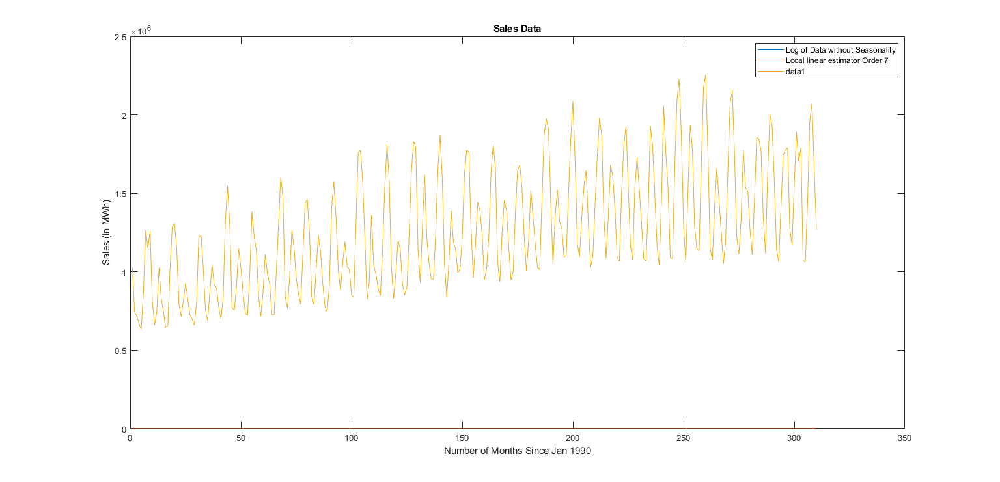
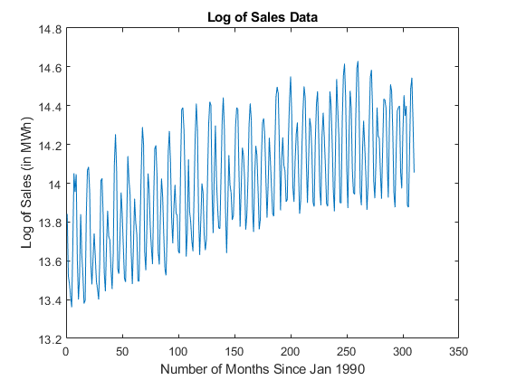
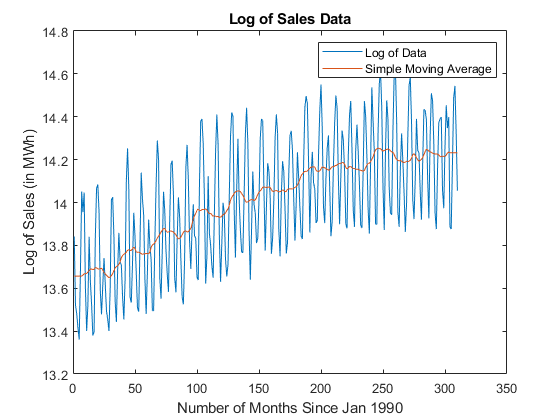
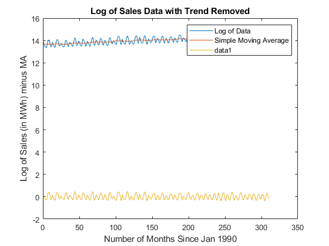
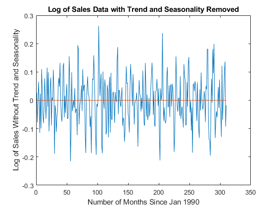
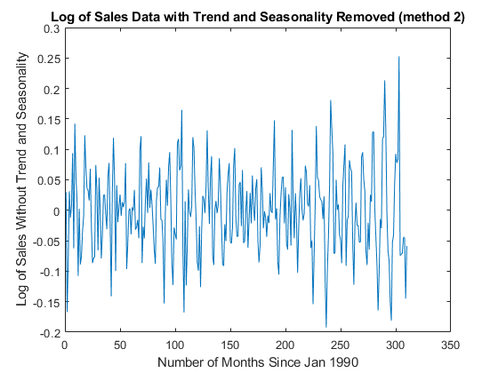
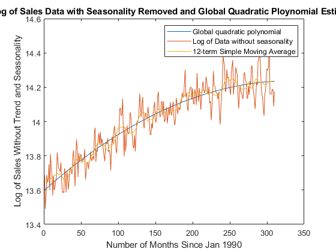
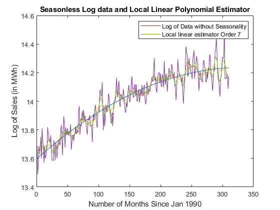

Contents
Plot the data and its log, to see which better fits the classical decomposition of a time series
figure(1)
plot(Sales)
title ('Sales Data')
xlabel('Number of Months Since Jan 1990')
ylabel('Sales (in MWh)')
logsales = log(Sales)
figure(2)
plot(logsales)
title ('Log of Sales Data')
xlabel('Number of Months Since Jan 1990')
ylabel('Log of Sales (in MWh)')
logsales =
13.8415
13.5209
13.4816
13.4148
13.3608
13.6823
14.0507
13.9552
14.0468
13.6050
13.4004
13.5213
13.8404
13.6312
13.5249
13.3790
13.3956
13.8362
14.0666
14.0838
13.9584
13.5878
13.4782
13.6111
13.7412
13.6208
13.4942
13.4548
13.4007
13.6033
14.0132
14.0243
13.8398
13.5365
13.4424
13.6838
13.8584
13.7237
13.7082
13.5577
13.4544
13.6392
14.0996
14.2521
14.0698
13.5580
13.5330
13.7179
13.9523
13.8414
13.6697
13.5078
13.4905
13.7966
14.1391
14.0185
13.9408
13.6418
13.4802
13.6760
13.9202
13.7998
13.7345
13.4974
13.4943
13.8146
14.0767
14.2890
14.2012
13.6460
13.5510
13.7769
14.0502
13.9622
13.7731
13.6665
13.5828
13.9171
14.1767
14.1949
14.0344
13.6488
13.5806
13.8294
14.0237
13.9339
13.7332
13.5596
13.5248
13.7316
14.1586
14.2691
14.1073
13.8229
13.6907
13.8719
13.9916
13.8462
13.8310
13.6520
13.6381
14.0890
14.3795
14.3900
14.2758
14.0140
13.6218
13.7504
14.1233
13.8564
13.8009
13.7035
13.6490
13.9447
14.2424
14.4103
14.2744
13.8456
13.6304
13.8057
13.9986
13.9509
13.7350
13.6549
13.7112
14.0224
14.3052
14.4204
14.4005
13.9589
13.7433
14.0604
14.2974
14.0109
13.8706
13.7691
13.7655
14.0341
14.3168
14.4419
14.2807
13.8622
13.6394
13.8756
14.1447
13.9902
13.9512
13.8103
13.8315
14.0134
14.2994
14.3900
14.3819
14.0553
13.7755
13.9808
14.1832
14.1451
14.0266
13.7611
13.8340
14.0164
14.3046
14.4109
14.3216
13.8701
13.7486
14.0352
14.1925
14.1445
13.9665
13.7622
13.8137
14.1320
14.3149
14.3343
14.2426
14.0181
13.8220
13.9968
14.2347
14.1119
13.9752
13.8432
13.8292
14.1859
14.4445
14.4968
14.4605
14.1826
13.8601
14.1211
14.2360
14.0926
14.0619
13.9046
13.9151
14.2187
14.4254
14.5506
14.3472
13.9807
13.9038
14.1152
14.2517
14.3133
14.0761
13.8423
13.9114
14.1673
14.3681
14.4992
14.4400
14.1142
13.8988
14.1190
14.3357
14.2914
14.1502
13.9015
13.8794
14.2203
14.4067
14.4736
14.2446
13.9658
13.8865
14.2469
14.3635
14.2360
14.0835
13.8944
13.8803
14.1482
14.4732
14.4039
14.2199
13.9670
13.8551
14.1860
14.5373
14.3793
14.2353
13.9008
13.8971
14.3204
14.5534
14.6164
14.4412
14.0708
13.8718
14.2380
14.4763
14.3890
14.0663
13.9513
13.9423
14.3336
14.5926
14.6295
14.3833
13.9548
13.8866
14.1610
14.3221
14.1945
14.0433
13.8632
13.9963
14.3045
14.5443
14.5844
14.3768
14.0141
13.9226
14.1079
14.3903
14.2441
14.2306
14.0526
13.9203
14.1829
14.4339
14.4294
14.3865
14.1127
13.9260
14.3069
14.5096
14.4738
14.2689
13.9487
13.8756
14.1601
14.3727
14.3895
14.3987
14.0571
13.9736
14.2610
14.4536
14.3474
14.3978
13.8850
13.8764
14.1794
14.4879
14.5441
14.3242
14.0547
 
Calculate the moving average (for logsales)
movingavg1 = zeros(310,1);
movingavg2 = zeros(310,1);
movingavg = zeros(310,1);
for i = 7:(size(logsales)-6)
sum = 0;
for j = i - 5: i + 5
sum = sum + logsales(j);
end
movingavg1 (i) = (sum + logsales(i - 6))/12;
movingavg2 (i) = (sum + logsales(i + 6))/12;
end
movingavg = (movingavg1 + movingavg2)/2;
for i = 1:6
movingavg(i) = movingavg(7);
movingavg(length(logsales) + 1 - i) = movingavg(length(logsales)- 6);
end
Plot the log data with the moving average
p1 = plot(logsales);
title ('Log of Sales Data')
xlabel('Number of Months Since Jan 1990')
ylabel('Log of Sales (in MWh)')
legend('Log of Data')
hold on
p2 = plot(movingavg);
legend ([p1, p2],'Log of Data', 'Simple Moving Average')

Remove the trend from the data
trendless = logsales - movingavg
figure(2)
plot(trendless)
title ('Log of Sales Data with Trend Removed')
xlabel('Number of Months Since Jan 1990')
ylabel('Log of Sales (in MWh) minus MA')
trendless =
0.1848
-0.1358
-0.1751
-0.2419
-0.2959
0.0256
0.3940
0.2939
0.3791
-0.0629
-0.2675
-0.1545
0.1575
-0.0577
-0.1657
-0.3072
-0.2931
0.1405
0.3713
0.3931
0.2694
-0.1031
-0.2161
-0.0737
0.0683
-0.0473
-0.1665
-0.1989
-0.2493
-0.0483
0.3537
0.3557
0.1579
-0.1585
-0.2591
-0.0215
0.1480
0.0002
-0.0344
-0.1954
-0.3033
-0.1237
0.3313
0.4751
0.2895
-0.2187
-0.2431
-0.0663
0.1599
0.0572
-0.0995
-0.2595
-0.2781
0.0320
0.3776
0.2600
0.1814
-0.1199
-0.2813
-0.0864
0.1597
0.0306
-0.0568
-0.3049
-0.3112
0.0020
0.2545
0.4546
0.3584
-0.2055
-0.3112
-0.0932
0.1717
0.0834
-0.0948
-0.1946
-0.2796
0.0512
0.3097
0.3302
0.1726
-0.2069
-0.2682
-0.0093
0.1935
0.1014
-0.1055
-0.2894
-0.3360
-0.1355
0.2910
0.4065
0.2443
-0.0481
-0.1889
-0.0272
0.0684
-0.0913
-0.1185
-0.3125
-0.3315
0.1273
0.4174
0.4220
0.3086
0.0459
-0.3489
-0.2147
0.1699
-0.0921
-0.1485
-0.2387
-0.2865
0.0065
0.3070
0.4762
0.3391
-0.0849
-0.3007
-0.1312
0.0558
0.0051
-0.2164
-0.3066
-0.2597
0.0362
0.2960
0.3962
0.3681
-0.0838
-0.3065
0.0079
0.2439
-0.0440
-0.1802
-0.2727
-0.2679
0.0128
0.3095
0.4418
0.2781
-0.1455
-0.3727
-0.1384
0.1323
-0.0194
-0.0604
-0.2136
-0.2061
-0.0343
0.2458
0.3283
0.3106
-0.0171
-0.2950
-0.0898
0.1122
0.0731
-0.0439
-0.2991
-0.2174
-0.0361
0.2495
0.3553
0.2686
-0.1804
-0.3011
-0.0186
0.1335
0.0883
-0.0832
-0.2904
-0.2481
0.0688
0.2515
0.2704
0.1797
-0.0485
-0.2486
-0.0767
0.1535
0.0186
-0.1340
-0.2819
-0.3044
0.0456
0.2990
0.3520
0.3129
0.0288
-0.2998
-0.0438
0.0706
-0.0742
-0.1025
-0.2467
-0.2295
0.0724
0.2788
0.3942
0.1809
-0.1836
-0.2577
-0.0441
0.0970
0.1631
-0.0758
-0.3190
-0.2552
0.0007
0.1978
0.3263
0.2650
-0.0664
-0.2830
-0.0636
0.1493
0.1045
-0.0276
-0.2619
-0.2773
0.0587
0.2386
0.3067
0.0828
-0.1929
-0.2719
0.0914
0.2082
0.0808
-0.0677
-0.2559
-0.2686
0.0031
0.3234
0.2409
0.0446
-0.2149
-0.3278
-0.0048
0.3360
0.1658
0.0038
-0.3443
-0.3530
0.0674
0.3008
0.3659
0.1974
-0.1681
-0.3711
-0.0074
0.2288
0.1394
-0.1815
-0.2892
-0.2940
0.0998
0.3685
0.4199
0.1828
-0.2411
-0.3079
-0.0345
0.1298
0.0061
-0.1429
-0.3252
-0.1961
0.1128
0.3519
0.3872
0.1697
-0.2087
-0.3049
-0.1114
0.1806
0.0455
0.0380
-0.1445
-0.2810
-0.0268
0.2110
0.1918
0.1379
-0.1333
-0.3137
0.0699
0.2761
0.2445
0.0408
-0.2776
-0.3503
-0.0659
0.1509
0.1753
0.1844
-0.1598
-0.2408
0.0458
0.2327
0.1154
0.1625
-0.3472
-0.3558
-0.0528
0.2557
0.3119
0.0920
-0.1775

Remove seasonality (Method 1)
seasonless = zeros(length(logsales));
for i = 13:length(logsales)
seasonless(i) = trendless(i) - trendless(i-12);
end
for i = 1:12
seasonless(i) = trendless(i) - trendless(i+12);
end
figure(3)
plot(seasonless)
title ('Log of Sales Data with Trend and Seasonality Removed')
xlabel('Number of Months Since Jan 1990')
ylabel('Log of Sales Without Trend and Seasonality')

Calculate seasonal adjustment and remove seasonality (Method 2)
seasonadj = zeros(12,1);
for i = 1:12
monthsum = 0;
count = 0;
for j = i:12:310
monthsum = monthsum + logsales(j);
count = count + 1;
end
seasonadj(i) = monthsum/count;
end
seasonadj = seasonadj - mean(seasonadj)
newseasonless = zeros(length(logsales),1);
onlyseasonless = zeros(length(logsales),1);
for i = 1:12
for j = i:12:310
newseasonless(j) = trendless(j)-seasonadj(i);
onlyseasonless(j) = logsales(j)-seasonadj(i);
end
end
figure (4)
plot(newseasonless)
title ('Log of Sales Data with Trend and Seasonality Removed (method 2)')
xlabel('Number of Months Since Jan 1990')
ylabel('Log of Sales Without Trend and Seasonality')
seasonadj =
0.1550
0.0312
-0.0904
-0.2731
-0.2834
0.0175
0.3003
0.3562
0.2369
-0.1190
-0.2843
-0.0470

Fitting a Global Polynomial to the seasonless data
M = zeros(length(logsales),3);
for i = 1:length(logsales)
M(i,1) = 1;
M(i,2) = i;
M(i,3) = i^2;
end
coeff = inv(M'* M) * M' * onlyseasonless
x = (1:0.1:length(logsales));
y = coeff(1) + coeff(2)*x + coeff(3)* x.^2;
figure (5)
p3 = plot(x,y);
hold on
p4 = plot(onlyseasonless);
ylim([13.4,14.6])
hold on
p5 = plot(movingavg)
title ('Log of Sales Data with Seasonality Removed and Global Quadratic Ploynomial Estimate')
xlabel('Number of Months Since Jan 1990')
ylabel('Log of Sales Without Trend and Seasonality')
legend ([p3, p4, p5],'Global quadratic polynomial','Log of Data without seasonality', '12-term Simple Moving Average')
coeff =
13.5966
0.0038
-0.0000
p5 =
Line with properties:
Color: [0.9290 0.6940 0.1250]
LineStyle: '-'
LineWidth: 0.5000
Marker: 'none'
MarkerSize: 6
MarkerFaceColor: 'none'
XData: [1 2 3 4 5 6 7 8 9 10 11 12 13 14 15 16 17 18 19 20 … ]
YData: [13.6567 13.6567 13.6567 13.6567 13.6567 13.6567 … ]
Use GET to show all properties

Local Polynomial Estimate
A = zeros(7,2);
for i = 1:7
A(i,1) = 1;
A(i,2) = i-4;
end
inv(A'* A)* A'
movingavg7 = zeros(310,1);
for i = 4:(size(onlyseasonless)-3)
sum = 0;
for j = i - 3: i + 3
sum = sum + onlyseasonless(j);
end
movingavg7 (i) = sum/7;
end
for i = 1:3
movingavg7(i) = movingavg7(4);
movingavg7(length(logsales) + 1 - i) = movingavg7(length(logsales)- 3);
end
p5 = plot(onlyseasonless);
title ('Seasonless Log data and Local Linear Polynomial Estimator')
xlabel('Number of Months Since Jan 1990')
ylabel('Log of Sales (in MWh)')
hold on
p6 = plot(movingavg7);
legend ([p5, p6],'Log of Data without Seasonality', 'Local linear estimator Order 7')
ans =
0.1429 0.1429 0.1429 0.1429 0.1429 0.1429 0.1429
-0.1071 -0.0714 -0.0357 0 0.0357 0.0714 0.1071
